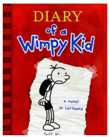
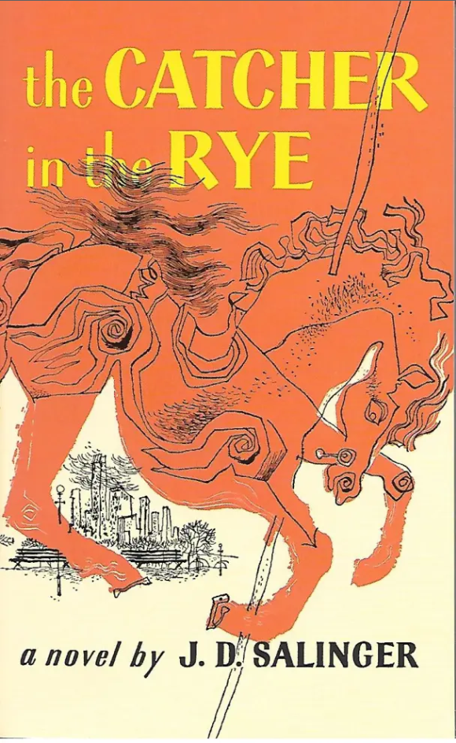

#1 Best List
jonnywalker11
This handpicked selection features must-read books that encompass captivating stories, insightful non-fiction, and remarkable classics. Embark on a literary journey filled with hidden gems, and explore the world of literature through the eyes of a passionate reader.
Hatchet - Gary Paulson
"Hatchet" by Gary Paulsen is a thrilling survival story. Follow the adventure of Brian Robeson, a young boy stranded in the wilderness, as he battles nature, solitude, and his own inner demons to survive.
Diary of a Wimpy Kid - Jeff Kinney
"Diary of a Wimpy Kid" by Jeff Kinney is a hilarious and relatable series. Join Greg Heffley as he navigates the ups and downs of middle school life through his diary, filled with humor and cartoons.
"1984" by George Orwell
"1984" by George Orwell is a classic dystopian novel that explores the consequences of a totalitarian regime on individual freedom and thought. It's a thought-provoking and haunting portrayal of a bleak future.
The Land of Stories: the Wishing Spell - Chris Colfer
"The Land of Stories: the Wishing Spell" by Chris Colfer is a delightful fantasy novel that transports readers to a world of fairy tales come to life. Join twins Alex and Conner as they embark on an enchanting adventure.
"The Catcher in the Rye" by J.D. Salinger
"The Catcher in the Rye" is a classic coming-of-age novel that follows the journey of Holden Caulfield. Through his narrative, Salinger explores themes of alienation, identity, and the search for authenticity.

"To Kill a Mockingbird" by Harper Lee
"To Kill a Mockingbird" by Harper Lee is a powerful exploration of racial injustice and moral growth in the American South. Through the eyes of Scout Finch, the novel addresses themes of racism and empathy.
Double Fudge - Judy Blume
"Double Fudge" by Judy Blume is a humorous children's novel featuring Fudge Hatcher and his quirky family. Filled with humor and heart, this book is perfect for young readers.
"The Great Gatsby" by F. Scott Fitzgerald
"The Great Gatsby" is a classic novel set in the Roaring Twenties. It delves into the lives of the rich and mysterious Jay Gatsby and the complexities of the American Dream.
"Harry Potter and the Sorcerer's Stone" by J.K. Rowling
"Harry Potter and the Sorcerer's Stone" introduces readers to the magical world of Harry Potter. Join Harry, Ron, and Hermione as they begin their journey at Hogwarts School of Witchcraft and Wizardry.